Warning
Read the documentation of the latest major version of Phaser Editor 2D here.
Warning
This documentation is in construction.
7 Scene Editor¶
The Scene Editor is the most important editor of the IDE. As its name suggests, this editor provides visual tools to create scenes (or levels).

The Scene Editor is pretty similar to other scene makers in the market, it has common and particular features. Maybe the most relevant difference is that this editor compiles the scene into readable Phaser code.
Phaser provides support for certain file formats like the asset pack and the sprite animations, but it lacks a full-feature Scene file format suitable for level editors. And maybe it should be that way because Phaser is a framework and you may use it in very different ways and very different context.
So, how can we develop a scene editor? We know we need to save the scene in a custom format. We have two main options:
- We can create a custom runtime, or plugin, to load the scene files in the game and create the objects in the fly.
- We can create a scene compiler, that translates the custom scene file into Phaser code.
The second option plays much better with the Phaser Editor 2D philosophy of being fully compatible with a vanilla Phaser runtime. So this compiler gets a custom scene file and generates a clean, readable, hand-writing-like Phaser code. Even this option has other advantages: it is very easy to debug the scene and know exactly how the objects are created.
In the previous version of Phaser Editor 2D, we used custom scene renderers based on desktop UI toolkits, because of the lack of a Web View available in all the OS platforms. However, now the Eclipse IDE provides better support for its Web View and we migrated the scene renderer to Phaser. This means, what you see in the scene editor is what you get in the game because both are built with the same technology: Phaser.
7.1 Create a new Scene file¶
The scene files (*.scene) are created using the New Scene File wizard. This wizard can be opened from the main menu: File → New → Scene File, or using the New button.

The New Scene File wizard is divided into two steps:
- Set the location and name of the new scene file.
- Select an asset pack file to import the scene compiled code in the game. This is optional.


7.2 Adding objects to the scene¶
When you activate the Scene Editor (open, select, focus on) the main toolbar shows a couple of buttons dedicated to the Scene Editor. In the middle, there is the Add Object button.
The Add Object button shows a menu with the object types supported by the Scene Editor.
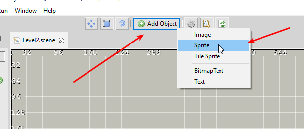Some objects typically use a resource. The Image, Sprite and Tile Sprite types use textures (images, atlas frames, sprite-sheet frames). The Bitmap Text uses a bitmap font. When you select to add any of these objects, the editor opens a dialog to select the asset needed by the object.
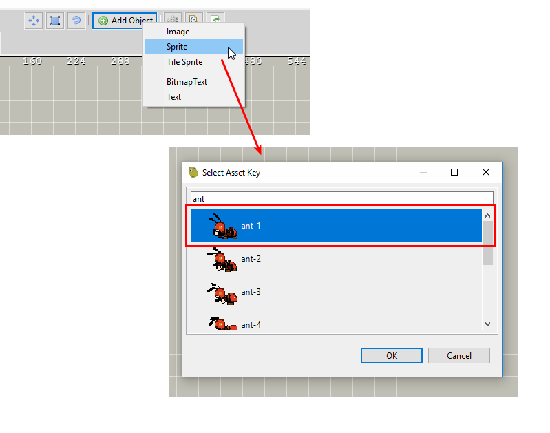Finally, the new object is added to the center of the scene:
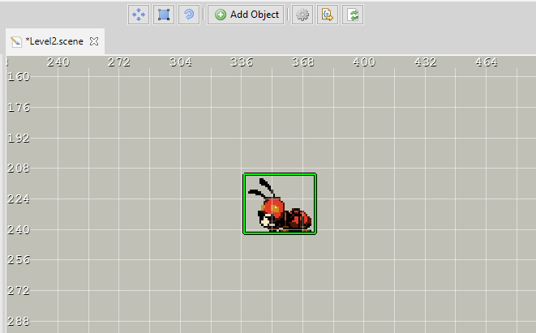When you select to add a Text object, it does not open any dialog because it does not require any asset, the Text object is created with a New Text value and added to the center of the scene.
7.2.1 Adding objects from the Blocks view¶
When the Blocks view connects with the active Scene Editor, it shows all the file keys or file configurations that you can use to create new objects.
A new object is created when you drag a file key from the Blocks view and drop it into the scene.
Each type of file creates a particular type of object by default. However, once the object is created, you can morph it to another type.
| Blocks element | Scene Object type |
|---|---|
| Image key | Image |
| Atlas frame key | Image |
| Sprite-sheet frame key | Image |
| Animation key | Sprite |
| Bitmap Font key | Bitmap Text |
 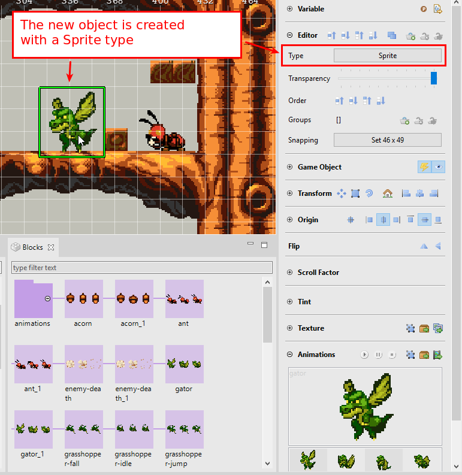
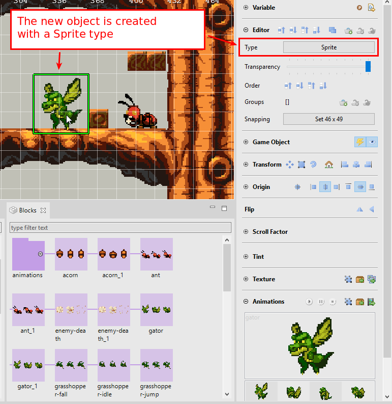
7.2.2 Adding objects from the Assets view¶
The Assets view shows the files created by the Phaser Editor 2D editors. In the case of the Asset Pack files, it also shows the file keys defined in the file.
In the same way, you drop file keys from the Blocks view into the scene, you can drag the file keys from the Assets view and drop them into the scene. Take a look at the previous section for more details on the kind of objects are created.
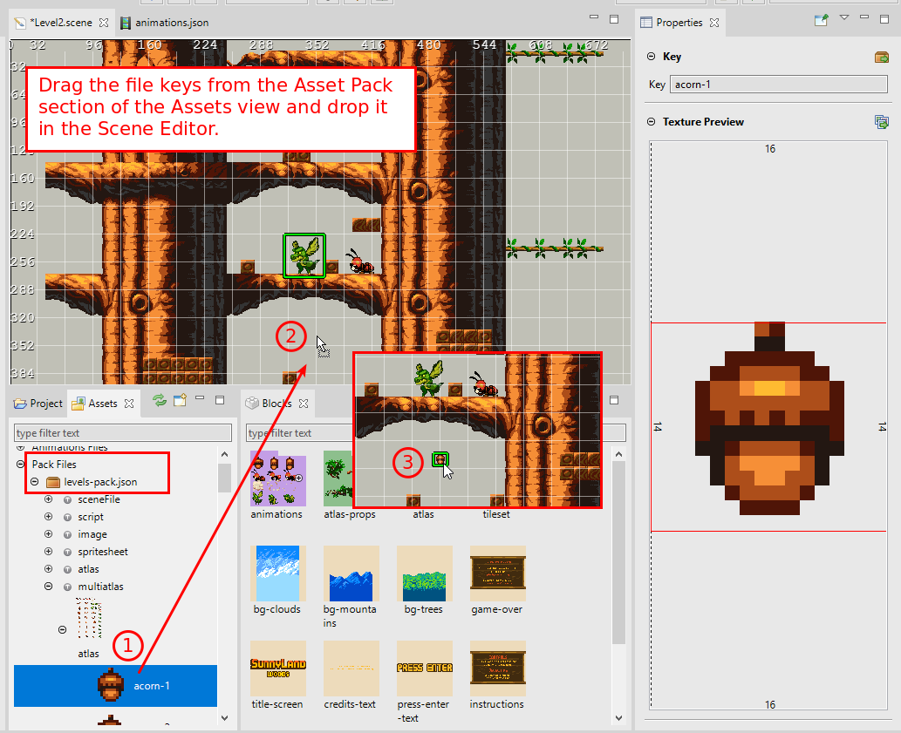7.3 Supported object types¶
The Scene Editor is in active development and only supports a very basic set of object types. Eventually, we should add more types and more properties. However, you can use an object factory to create objects of any type, even your custom type.
The list of supported object types is:
7.3.1 Common properties¶
Like it is in the other editors of the IDE, the Properties view connects with the active Scene Editor and show the properties of the objects selected in the scene or the Outline view.
In the Phaser API, the properties of the game object types are divided into dedicated classes in the Phaser.GameObjects.Components namespace. So, an object type contains its properties and methods but also inherits a couple of “component” classes, like Phaser.GameObjects.Components.Transform or Phaser.GameObjects.Components.Tint.
In the Properties view of the Scene Editor we split the properties more or less in the same way, each properties section is dedicated to a specific Phaser game object component class. There is not a 100% match, there are sections dedicated only to Scene Editor-properties or there are sections with a merge of Phaser API properties and editor-properties.
The editor-properties are not part of the Phaser API and are needed by the editor to help create the scenes, but are not generated in the final code. They are design-time properties.
In this chapter, we explain the properties that are common to the majority of the supported game object types.
Variable properties section¶
This section is used by the editor and the scene compiler to identify the object and provides certain operations.
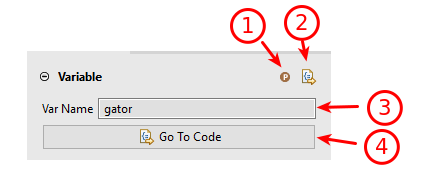- The generate property button. You can check or un-check it. By default, the scene compiler assign an object to a local variable, but if you set true this property, the object is assigned to an instance field. Do this when you need to get access to the object outside the create method.
- The go-to source button. Click it to open the JavaScript editor and scroll to the line where this object is created. If you enabled an external editor then it opens the external editor.
- The Var Name property is used by the scene compiler as the variable name and the Outline view use it as the label of the object.
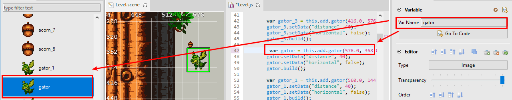
- The same in (1).
Editor properties section¶
A section that contains properties and buttons that are not part of the Phaser API but are used to provide certain functionalities of the editor.
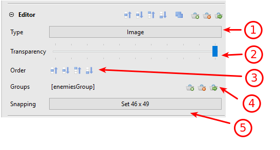- The Type property displays the type of the game object. You can click the button to morph the object to another type, which is an important feature.
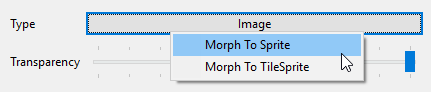
- The Transparency property. You can change its value to render the object in the editor with certain transparency, but it is not applied to the object in the game. Note it is not included in the generated code.
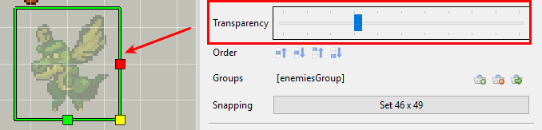
- The Order buttons allow changing the order the objects are created in the scene, which is the same order they are rendered.

- Moves the object up in the order (or press
PageUpkey).- Moves the object down in the order (or press
PageDownkey).- Moves the object to the top of the order (or press
Homekey).- Moves the object to the bottom of the order (or press
Endkey).You can see in the Outline view the result of the ordering.
- The Groups displays the groups that contain the object, and buttons to add or remove the object to the groups. A group (that is part of the Phaser API, see Phaser.Group ) is a powerful resource in your hands. You can use it as an object pool or as an object classifier. In many Phaser examples and games, you can see how the groups are used to apply common behavior to objects instead of creating custom types. Read more about groups.
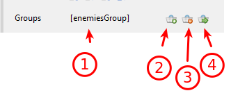
- Lists the groups containing the object. One object could be added to many groups.
- A button to add the object to an existent group, or a new group.
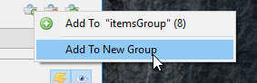
- A button to delete the object from one of its groups.

- A button to select a specific group and see its content.
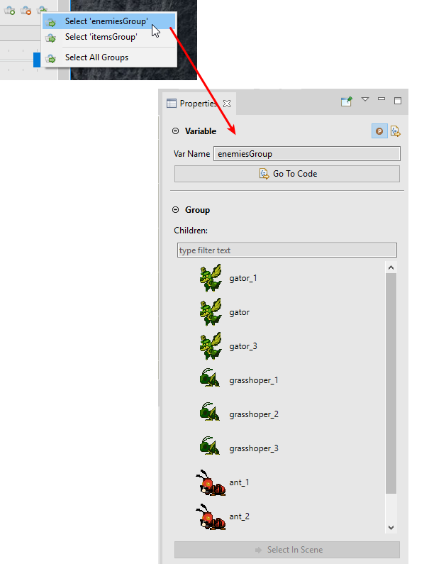
- The Snapping button is a shortcut to set the snapping value of the scene editor, using the size of the selected object. Many games use fixed-size images and the objects are placed in a grid. The snapping feature of the Scene Editor helps to set a custom grid and place the objects quickly. See more in the Snapping properties section.
Game Object properties section¶
The majority of the objects you add to the scene are a subtype of the Phaser.GameObjects.GameObject. The Game Object section exposes properties of the GameObject class and other properties that are not part of the Phaser API but are used by the editor to provide more flexibility.
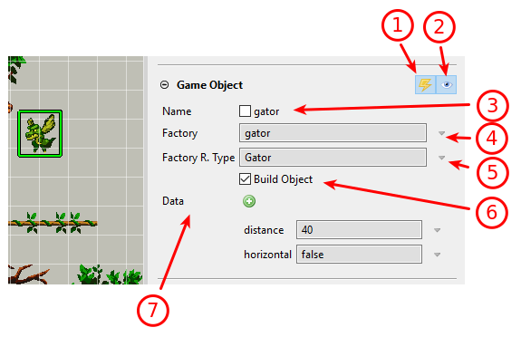- The Active button. It sets On or Off the active property.
- The Visible button. It sets On or Off the visible property. If this button is set On, the object will be rendered in the editor with a certain transparency.
- The Name property. If it is selected, then the Var Name of the object will be used as the name too.
- The Factory property is not Phaser API, it says to the scene compiler to use a different factory for the object. You can write the new factory name directly in the text-box or select one from the menu. Leaves it empty to use the default factory.
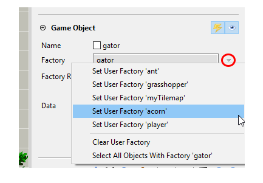// using the default factory "sprite" var gator = this.add.sprite(560.0, 144.0, "atlas", "gator-1"); // using the custom factory "gator" var gator = this.add.gator(560.0, 144.0, "atlas", "gator-1");Learn more about factories in the Making reusable objects section.
- The Factory R. Type property is not Phaser API, you can use it together with the Factory property to create custom objects. When you use a custom factory, probably, the object returned by it is a custom type too, like
PlayerorEnemy. You can use this property to set the return type of a custom factory. The variables that reference the object will be declared with the custom type and you will get access to all its properties and methods.
In JavaScript, the code is generated like this:
var gator = this.add.gator(560.0, 144.0, "atlas", "gator-1"); /** @type {Gator} */ this.fGator = gator;Note that, if an instance property is generated for the object (
fGator), then it is annotated with theGatortype.In TypeScript, it has even more sense, because this language supports static typing. In the above case, it will generate a property with the
Gatortype.private fGator: Gator;Learn more about factories in the Making reusable objects section.
- The Build Object property is not part of the Phaser API. It indicates to the scene compiler to generate a call to the
buildmethod. This is useful for objects that are created with a custom factory and a custom object type. You can implement abuildmethod in the custom type to set-up the object with initial values that may depend on other object properties. Look in the next image how in thebuildmethod the velocity values are set regarding the user data set to the object.

- The Data property is associated with the data property of the Phaser API. This property is a reference to the Phaser.Data.DataManager. It allows setting user data to the object.
This is the workflow:
- Click on the add button and write the new data property name.
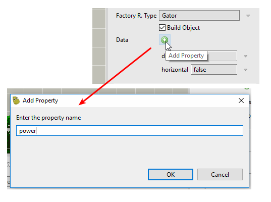
- The property was added, now write its value. This value is verbatim-written in the generated code. This means, you can write literals like
"high",{value:10, dir:"left"}or even JavaScript expressions likeMath.random() * gator.width.
This is how it is inserted in the generated code:
var gator = this.add.gator(576.0, 368.0, "atlas", "gator-1"); gator.setData("distance", 40); gator.setData("horizontal", false); gator.setData("power", 10); gator.build();
- Delete or select other objects with the same property or the same property and value.
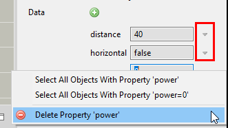
Transform properties section¶
This section contains the properties and tools to transform the position, scale, and angle of the objects. As you can see, the section toolbar contains a lot of tools, that may be repeated next to the properties or in the main IDE toolbar.
You can write the value (or a JavaScript expression like 12*16) of the properties directly in the text-box.

- The Position X/Y properties are part of the Phaser API. You can change them directly or by pressing the Position tool. Note the position tool appears next to the property, in the section toolbar and the main IDE toolbar.
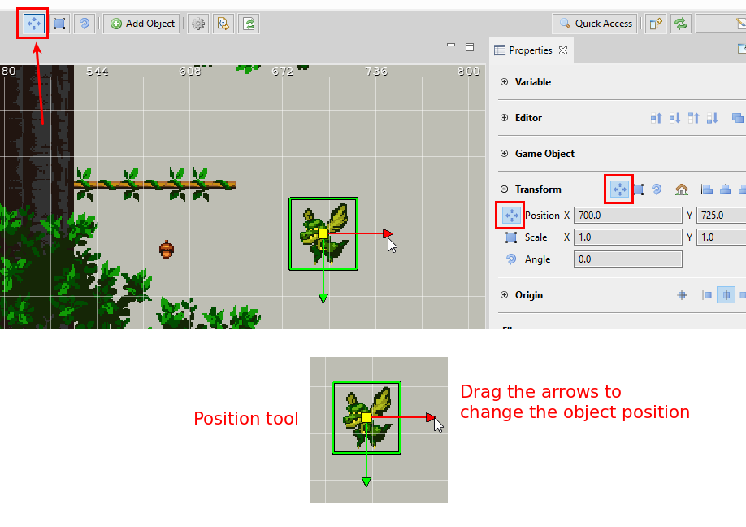The Position tool can be activated with the
Mkey.
- The Scale X/Y properties are part of the Phaser API. You can change it also with the Scale tool, present next to the property, in the section toolbar or the IDE toolbar. Also, you can press the
Skey.

- The Angle property is part of the Phaser API. It is expressed in degrees and you can change it directly or by pressing the Angle tool. This tool can be activated with the
Nkey.

- The section toolbar provides the buttons to activate the Position, Scale and Angle tools.
- The Transform Coords tool allows changing the coords of the transformations. The values are local or global.

- The Align tools allow to align the objects to the left, right, center, top, bottom, and middle. If you select many objects, the align operation works taking one of them as reference. If you select a single object, the align operations take as reference the borders of the scene.
Origin properties section¶
This section contains the properties and tools to change the origin of an object. The origin tool can be activated by pressing the Origin tool button or the O key.

Also, section toolbar provides shortcuts to set the origin of an object to a preset value.

Flip properties section¶
This is a simple section with two buttons to flip the object in the X (flipX) or Y (flipY) axes. These properties are Phaser API.
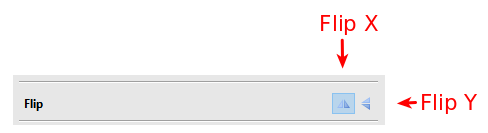Scroll Factor properties section¶
This section provides the scroll factor properties, that are part of the Phaser API.
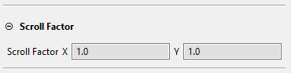Tint properties section¶
The tint properties are used to change the tint color of the objects, without the need to create a new texture. You can apply a single tint color to the whole texture or different tint colors in different places of the texture. These properties are part of the Phaser API.
Warning
Tint properties are applied only if the WebGL renderer is used. Learn how to configure the renderer in the Scene renderer preferences section.
- The isTinted property. Check it to enable the tinting on the object.
- The tintFill property. Check it to Fill or Add the tint color.
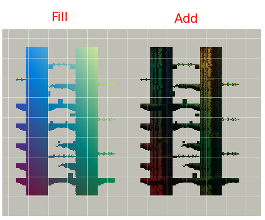
- The tint property. It applies a single tint color to the whole object.
- The tintTopLeft and tintTopRight properties. The tint colors to be applied to the top corners of the object.

- The tintBottomLeft and tintBottomRight properties. The tint colors to be applied to the bottom corners of the object.
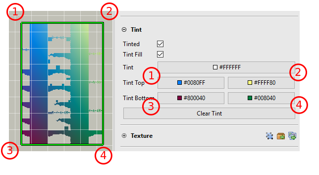
7.3.2 Image¶
When you drop a texture in the Scene Editor, by default, it creates a Phaser.GameObjects.Image object. The main difference with the Sprite is that Image objects cannot play sprite animations.
Image objects are created in code using the image factory:
var branch_1 = this.add.image(192, 512, "atlas-props", "branch-01");
The Image object contains all the common properties:
- Variable properties section
- Editor properties section
- Game Object properties section
- Transform properties section
- Origin properties section
- Flip properties section
- Scroll Factor properties section
- Tint properties section
Also, it contains the Texture properties section.
Texture properties section¶
There are multiple types of objects that contains textures, like the Image, Sprite and Tile Sprite. This section displays the texture of an object and buttons to perform related actions.
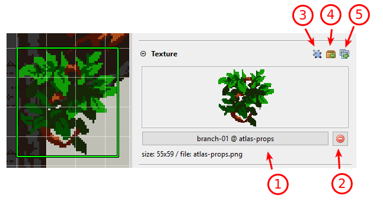- The Texture button. It shows the frame and key of the texture. Click on it to change the texture of the object. You can double click on the texture preview too. It opens a dialog with all the textures defined in the asset pack files of the project.
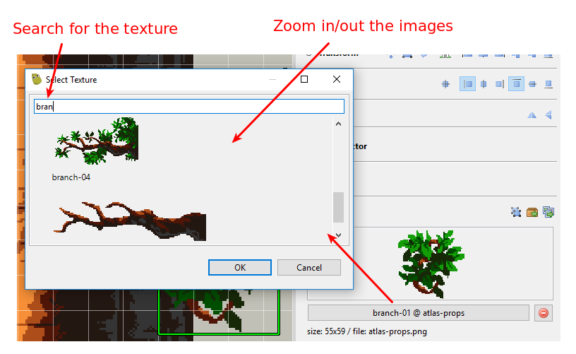
- The Delete texture button. It removes the texture from the object.
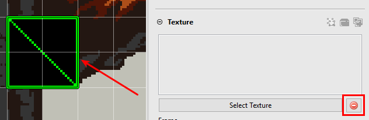
- Click the Select all button to select in the scene all the objects with the same texture.
- All textures in the Scene Editor are defined in asset pack files. This button opens the asset pack file containing the texture in the Asset Pack Editor.
- If the texture was packed with the Texture Packer Editor, this button opens the atlas file that contains the texture.
7.3.3 Sprite¶
The Phaser.GameObjects.Sprite object is often used to represent characters and items. The main difference with the Image object is that the Sprite can play sprite animations.
To create a Sprite object you can:
Morph an scene object into a Sprite object.
Drop on the scene an animation key from the Blocks view.
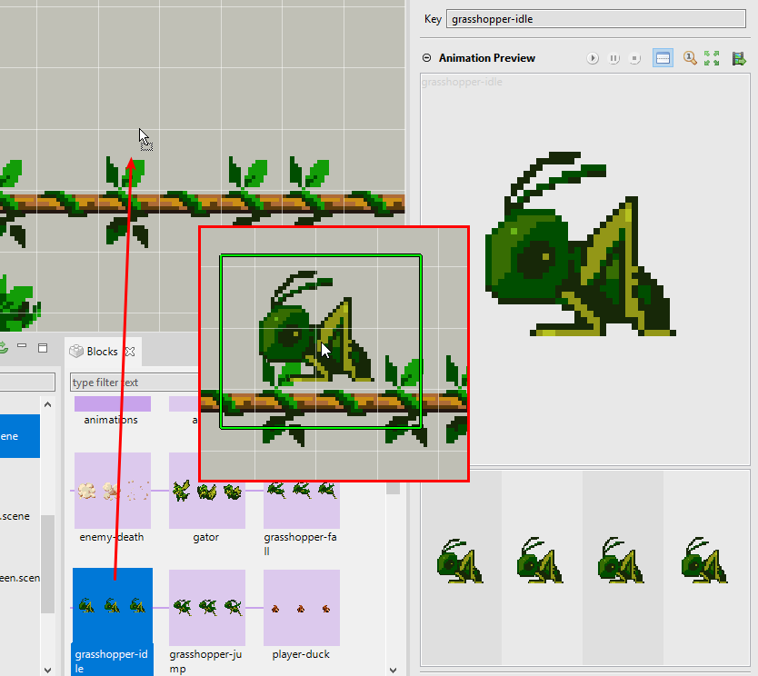
Sprite objects are created in code using the sprite factory:
var grasshopper = this.add.sprite(577, 675, "atlas", "grasshopper-idle-1");
The Sprite object contains all the common properties:
- Variable properties section
- Editor properties section
- Game Object properties section
- Transform properties section
- Origin properties section
- Flip properties section
- Scroll Factor properties section
- Tint properties section
It also contains the:
- Texture properties section, that is dedicated to all the objects with texture.
- Animations properties section, that is dedicated only to the Sprite objects.
Animations properties section¶
As we explained in the previous topic, the Sprite object a play sprite animations. In many cases, you may want to place animated objects in the scene with an initial animation. Phaser does not provide an initial animation or auto-play animation property, but the Scene Editor allows to set this auto-play animation to the Sprite object, and the compiler will generate an extra instruction that plays the animation:
var grasshopper = this.add.sprite(577, 675, "atlas", "grasshopper-idle-1")
grasshopper.anims.play("grasshopper-idle");
The Animations properties section shows a preview of the auto-play animation and the buttons to select the animation or remove it.
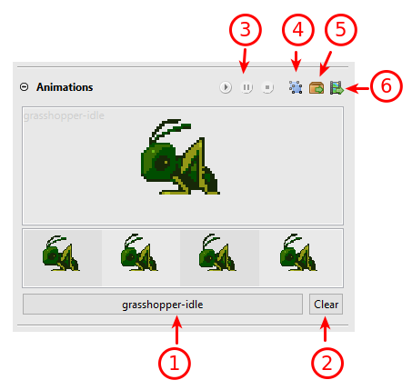- A button that shows the key of the animation and that you can click to select another animation.
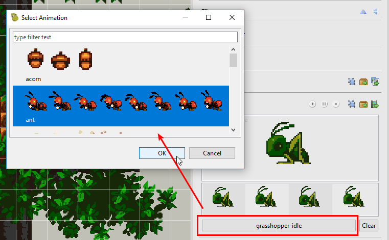
- Removes the auto-play animation. This means, no animation is played when the object is created.
- The playback buttons of the animation preview.
- A button to select all the objects with the same auto-play animation.
- A button to open the auto-play animation key in the Asset Pack Editor.
- A button to open the auto-play animation in the Animations Editor.
7.3.4 Tile Sprite¶
The Phaser.GameObjects.TileSprite object is used in backgrounds, platforms, and any other object that can be rendered as a repeated texture. We recommend reading the API documentation for tips and better understanding.
To create a Tile Sprite object, you can click on the Add Object button and select the Tile Sprite option. Or you can:
- Create an Image or Sprite object (using any method).
- Morph the Image or Sprite object into a Tile Sprite object. You can do this in two ways:
Morph it by selecting the Tile Sprite type in the Editor properties section.

Select the object and press the
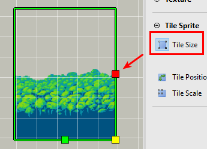Lkey. It morphs the object into a Tile Sprite and activate the ** Tile Size** tool.
Tile Sprite objects are created in code using the tileSprite factory:
this.add.tileSprite(0, 0, 400, 200, "backgrounds", "bg-trees");
The Tile Sprite object contains all the common properties:
- Variable properties section
- Editor properties section
- Game Object properties section
- Transform properties section
- Origin properties section
- Flip properties section
- Scroll Factor properties section
- Tint properties section
It also contains the:
- Texture properties section, that is dedicated to all the objects with texture.
- Tile Sprite properties section, that is dedicated only to the Tile Sprite objects.
Tile Sprite properties section¶
This section provides editors for the Tile Sprite specific properties and the shortcuts to activate different Tile Sprite tools.
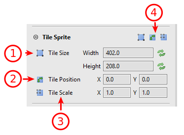- The Tile Size has the Width and Height properties. You can set the property’s value directly in the text-boxes or activating the Tile Size tool. This tool displays three handlers to change the width, height or both. The tool can be activated also by pressing the
Lkey.
Also, you can set the Tile Size to the original texture size.
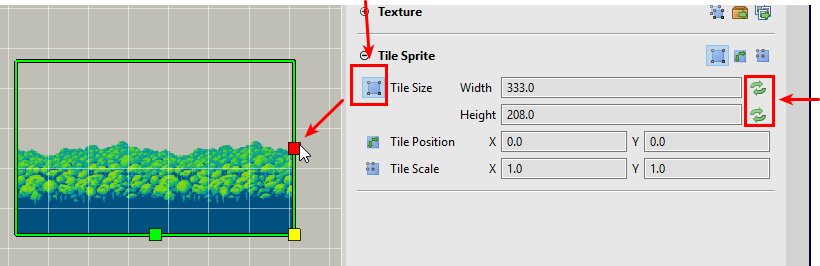
- The tilePosition property. You can change it with the Tile Position tool or setting the values directly in the text-boxes.
- The tileScale property. You can change it with the Tile Scale tool or setting the values directly in the text-boxes.
7.3.5 Bitmap Text¶
The Phaser.GameObjects.BitmapText is widely used in Phaser game development to display texts.
You can create a Bitmap Text object in two ways:
Drag a BitmapFontFile key from the Blocks view and drop it in the scene.
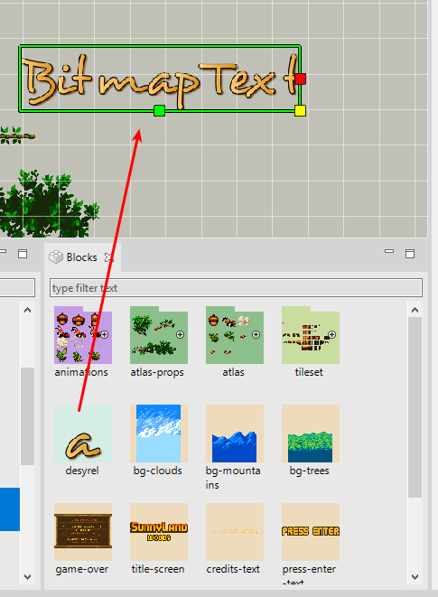Or click on the Add Object button and select a BitmapFontFile key.
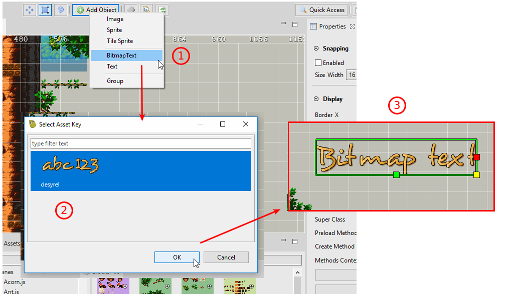
Bitmap Text objects are created in code using the bitmapText factory:
this.add.bitmapText(100, 150, "desyrel", "Hello bitmap text!", 70, 0);
The Bitmap Text type contains all the common properties:
- Variable properties section
- Editor properties section
- Game Object properties section
- Transform properties section
- Origin properties section
- Flip properties section
- Scroll Factor properties section
- Tint properties section
It also contains the:
- Text properties section, that is dedicated to all the objects with texts.
- Bitmap Text properties section, that is dedicated only to the Bitmap Text objects.
Text properties section¶
Phaser Editor 2D supports two type of objects that display texts: Text and Bitmap Text. This section is shared by both types, and it is just about to edit the text value of the objects.
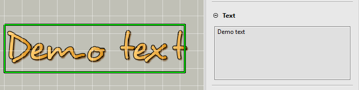Bitmap Text properties section¶
This section is dedicated only to Bitmap Text objects.
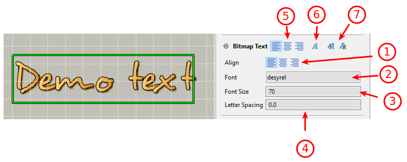- The align property. You can align the multi-line text to the left, center, or right.
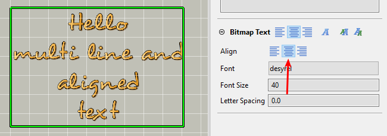
- The Font property is used to pass the key of the font (from the BitmapFont cache) to the bitmapText factory. It is a button, click it to select a new font key.
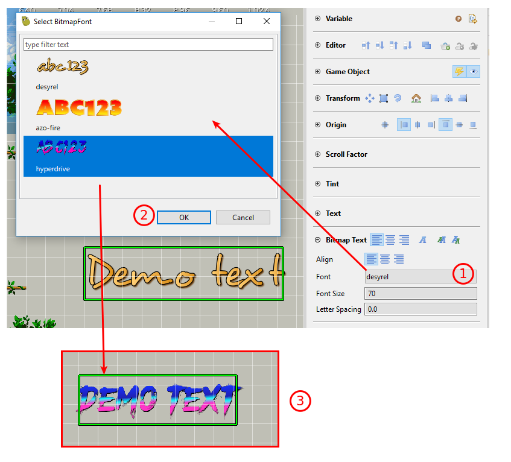
- The fontSize property. In the section toolbar there are buttons to increase/decrease the size.
- The letterSpacing property.
- The align buttons in the toolbar. Just like in point 1.
- A button to change the font. Just like in point 2.
- The buttons to increase/decrease the fontSize.
7.3.6 Text¶
7.3.7 Group¶
7.3.8 Morphing objects to a different type¶
7.3.9 Making reusable objects¶
7.4 Scene properties¶
7.4.1 Snapping properties section¶
7.4.2 Display properties section¶
7.4.3 Compiler properties section¶
7.4.4 WebView properties section¶
7.5 Scene Compiler¶
7.7 Scene Editor toolbar¶
7.8 Blocks view¶
The general purpose Blocks view provides building blocks for the active editor. In the case of the Scene Editor, the Blocks view displays all the file configurations or file keys that you can use to create the scene objects:
- Image keys.
- Atlas frame keys.
- Sprite-sheet frame keys.
- Animation keys.
- Bitmap Font keys.